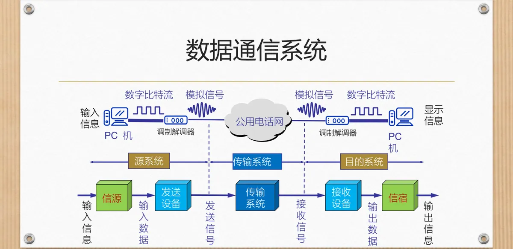
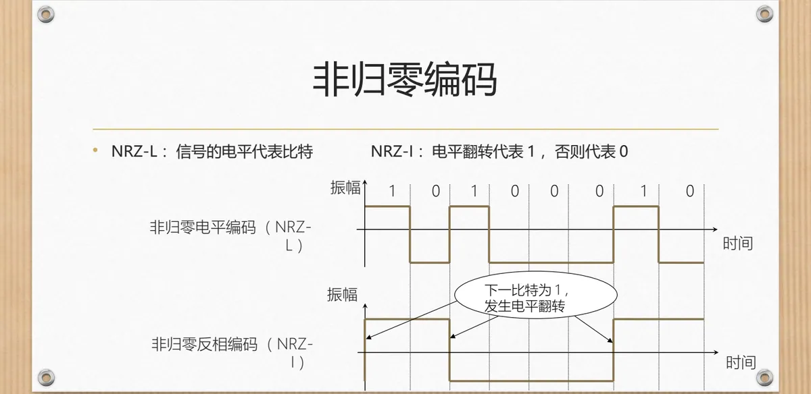
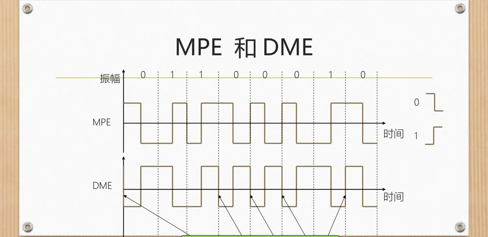
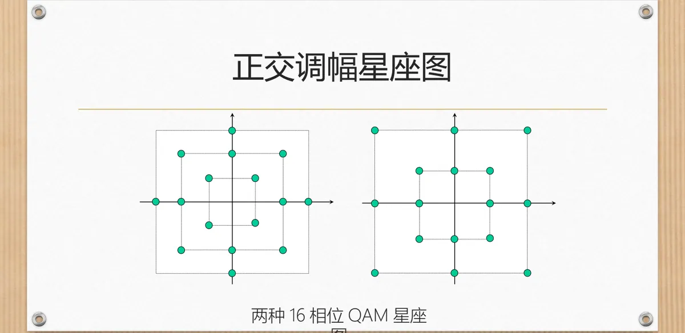
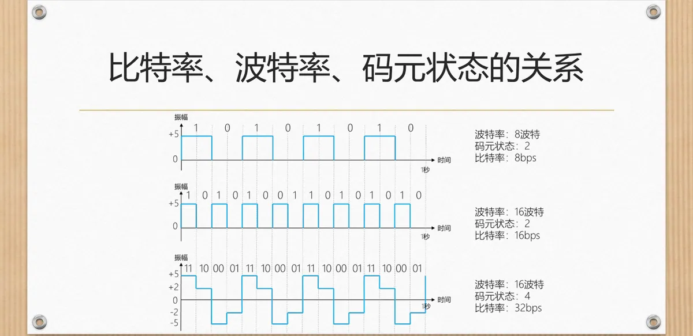
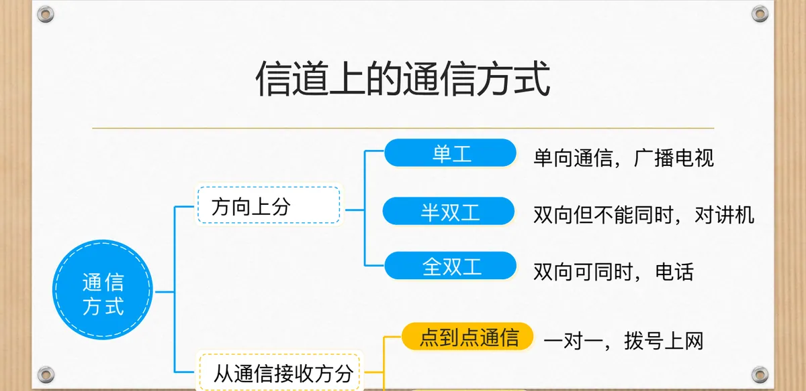

计算机通信与网络 · 第二版讲义 · 第 2 章 网络中的数据通信
2.2 网络中的数据传输
2.1 节说明了信息、数据与信号的关系。接下来的问题是：数据怎样被装进信号、沿着信道送出去，一条信道又能送多快。本节先看数据通信系统的组成，再按数字—数字、数字—模拟、模拟—数字、模拟—模拟四条线索讲编码与调制，随后讨论信道的极限速率、通信方式与物理层的常见设备。
1. 数据通信系统的组成
计算机内部的数据是数字形式的，承载它的信号却既可能是数字信号，也可能是模拟信号。数据要在信道上传输，先得转换成合适的信号，这个转换就是编码与调制。
一次通信由三部分组成：源系统、传输系统与目的系统。源系统中，信源（如一台 PC 机）产生信息，发送设备（如调制解调器）把它转换成适合传输的信号；传输系统是中间的传输信道，图 1 中用的是公用电话网；目的系统中，接收设备把信号还原成数据，交给信宿显示。

两端各有一个调制解调器（modem）：发送端把数字比特流调制成模拟信号送进电话网，接收端再把模拟信号解调回数字比特流。数据在两端是数字的，在信道里却是模拟的——数据的形式与信号的形式可以不同。
2. 编码：把信息装进信号的四种方式
编码是信息（数据）用信号来表示的方法。按数据的数字/模拟与信号的数字/模拟两两组合，共有四种方式，分别应付比特在导线上直传、比特借模拟信道传输、模拟量送进计算机，以及电话与电视这类模拟数据用模拟信号传输的场合。
| 编码方式 | 数据形式 | 信号形式 | 本节涉及的方法 |
|---|---|---|---|
| 数字—数字 | 数字 | 数字 | 单极性编码；极化编码（NRZ、RZ、双相位）；双极性编码 |
| 数字—模拟 | 数字 | 模拟 | ASK、FSK、PSK、QAM |
| 模拟—数字 | 模拟 | 数字 | 采样、量化、编码三步的 A/D 数据采集 |
| 模拟—模拟 | 模拟 | 模拟 | 传统电话系统与有线电视系统的调制 |
3. 数字—数字编码：用脉冲电压表示比特
数字—数字编码用数字信号表示数字信息：计算机产生的 0、1 比特序列被转换成一串可以在导线上传输的脉冲电压。常见方案分三类——单极性编码、极化编码与双极性编码，差别在于用几个电平、比特与电平怎样对应，以及接收方能不能从信号本身提取同步信息。
（1）单极性编码
只用一个极性的电压：高电平表示 1，低电平表示 0。缺点是含有直流分量、要求带宽较高，而且连续的 1 或 0 使电平长时间不变，接收方无法同步，只能依赖附加线。
（2）极化编码
极化编码采用正、负两个电压，减轻了单极性编码的直流分量问题。常见的有非归零编码 NRZ（Non-Return-to-Zero）、归零编码 RZ（Return-to-Zero）与双相位编码。
非归零编码在比特间隙内电平不变，分两种：非归零电平编码 NRZ-L 用电平代表比特，非归零反相编码 NRZ-I 看电平是否翻转——下一比特为 1 就翻转，否则保持不变。

归零编码用正电平、负电平和零三个电平，并让信号在每个比特间隙的中间归零：正电压到零的跳变代表 1，负电压到零的跳变代表 0。每个比特至少跳变一次，接收方可以据此同步。
双相位编码让信号在每比特间隙的中间改变，但不归零，而是转为相反的一极，中间的跳变同样可用于同步。它有两种方式：曼彻斯特编码 MPE 用间隙中间的跳变同时表示比特与同步信息，负电平到正电平的跳变代表 1，正电平到负电平的跳变代表 0；差分曼彻斯特编码 DME 的中间跳变只携带同步信息，比特的取值看间隙开始处——有跳变代表 0，没有跳变代表 1（图 3）。

（3）双极性编码
双极性编码也用正、负、零三个电平，规则是：电平 0 代表比特 0，正、负电平交替代表比特 1。它和归零编码都用三个电平，区别在归零编码每个比特的中间都要回到零，而双极性编码的关键是「零电平表示 0」。
4. 数字—模拟编码：用模拟信号承载比特
数字—模拟编码利用模拟信号表示数字信息：取一个高频的载波作基础波形，用数字 1、0 去改变它的某个参数，这种技术称为调制。
2.1 节已说明正弦信号由振幅、频率、相位三个参数决定，因此有三种基本调制方式，常用机制有四种：幅移键控 ASK（Amplitude Shift Keying）、频移键控 FSK（Frequency Shift Keying）、相移键控 PSK（Phase Shift Keying）与正交调幅 QAM（Quadrature Amplitude Modulation）。
ASK 用载波的不同幅度代替 0 和 1，例如高幅表示 0、低幅表示 1，实现简单但抗干扰能力差。FSK 用不同频率表示 0 和 1，例如高频表示 0、低频表示 1，比 ASK 耐干扰。
PSK 调制载波的相位，例如相位 0 表示 0、相位 180 表示 1。它还可以用更多状态表示二进制位，是调制技术主要应用的技术：用 0 相位代表 00、90 相位表示 01、180 相位代表 10、270 相位表示 11，这样每种相位的正弦信号就能表示两位二进制信息。把可用的码元状态画在平面上，用方位与距离表示相位和振幅，就得到星座图：2-PSK、4-PSK、8-PSK 的每个码元分别携带 1、2、3 比特。
QAM 把 ASK 与 PSK 结合起来，同时改变载波的振幅和相位，同样一段频带里能容纳更多的码元状态。图 4 是两种 16 相位 QAM 星座图，16 个状态意味着每个码元可以携带 4 比特。

5. 模拟—数字编码与模拟—模拟编码
模拟—数字编码把连续变化的模拟量变成数字比特，课件称为 A/D 数据采集，主要用于自动控制系统，分三步：采样，把连续的模拟信号离散化；量化，把离散的采样值用二进制位数量化；编码，对量化后的数据用二进制编码。采样定理要求采样频率大于信号最高频率的 2 倍，才能无失真地还原原来的模拟信号。
模拟—模拟编码是模拟数据用模拟信号来传，传统的有线电视、电话系统都属此类。声音信号的频率范围约 20 Hz~20 kHz，主要能量集中在 300 Hz~3000 Hz 之间，电话线只要保证这一段通过即可，其带宽通常按 3.5 kHz 估算。
6. 基带信号与带通信号
基带信号（基本频带信号）是来自信源的信号，未进行频谱搬移和变换，计算机输出的代表各种文字、图像文件的数据信号都属于基带信号。它包含较多低频成分，甚至有直流成分，而许多信道并不能传输这种低频分量或直流分量。
解决办法是让发送设备产生一个高频信号作为基波来承载信息信号，这个基波称为载波信号；使用载波信号传输基带信号的过程称为调制（modulation），经过载波调制后的信号称为带通信号。前面讲的 ASK、FSK、PSK、QAM，做的都是把基带信号搬到信道能通过的那段频带上。
7. 奈氏准则：无噪声信道的极限速率
讨论速率之前先明确两个词。码元是携带数据信息的信号单元：数字通信用时间间隔相同的符号表示二进制数字，这样一个单位时间间隔内的信号就是一个二进制码元，这一间隔称为码元长度；码元速率指每秒通过信道传输的码元数，也叫信号速率或波特率，单位是波特（Baud）。
奈氏准则给出无噪声（理论状态）情况下波特率 B 与信道带宽 W 的关系：B = 2 × W（Baud）。也就是说，带宽为 W 赫兹的信道每秒最多只能传输 2W 个码元；码元速率有上限，不能靠一味加快码元来提高比特率。
比特率还取决于一个码元能取多少种状态。设码元状态数为 N，则 S = B × log₂N = 2 × W × log₂N（bps），即比特率 = 波特率 × 每个码元携带的比特数（图 5）；N = 2 时比特率与波特率数值相等，状态数增加，比特率随之成倍提高。

课件给出的第一个例子：电话线的带宽为 3.5 kHz，每个码元可能取 16 个值，求最大的数据传输率。这是无噪声条件下的问题，用奈氏准则：S = 2 × W × log₂N = 2 × 3.5 kHz × log₂16 = 2 × 3.5 kHz × 4 = 28 kbps。
8. 香农定理：有噪声信道的极限速率
奈氏准则假定信道没有噪声，而实际的信道总要受到噪声的干扰。香农（Shannon）定理给出噪声环境中有限带宽介质信道的最大传输速率：C = W × log₂(1 + S/N)（bps），其中 W 是信道带宽，S 是平均信号功率，N 是平均噪声功率。信噪比的单位是分贝（dB），换算关系为信噪比 = 10 × log₁₀(S/N)。信噪比越高，信号相对噪声越强，信道能达到的极限速率也越高。
课件的第二个例子：电话系统模拟部分的典型参数是信噪比为 30 dB、带宽为 3.5 kHz，求最大数据传输率。由 30 = 10 × log₁₀(S/N) 得 S/N = 1000，代入香农定理，C = 3.5 kHz × log₂(1 + 1000) ≈ 3.5 kHz × 10 = 35 kbps（log₂1001 约为 10）。
两个例子对照起来看：同一条带宽 3.5 kHz 的电话线，无噪声、每码元 16 个值时奈氏准则给出的上限是 28 kbps，计入 30 dB 信噪比后香农定理给出的上限约为 35 kbps；两个上限必须同时满足，实际速率取其中较小的那个。
9. 信道上的通信方式
按信息交互的方向，通信方式分三类：单工通信只能单向传输，广播电视就是这样；半双工通信双方都能发送但不能同时发送，对讲机说完一句要切换方向；全双工通信双方可以同时发送和接收，最典型的例子是电话。
按通信双方的对应关系，又可分为点到点通信与广播通信：前者一对一，例如拨号上网；后者一对多，一份信号同时送达多个接收方，例如无线广播。图 6 把这两组分类画在同一张图上。

10. 物理层的功能与常见设备
把上面这些收在一起，就是物理层要解决的问题：如何在介质上传输比特。它不关心比特代表文字、图像还是声音，只负责把 0、1 准确地送出去、收回来。为此，接口必须规定四个方面，即接口的四个特性：
- 机械特性：插头、线缆的规格与针脚的排列；
- 电气特性：接口上电压、电流的规格；
- 功能特性：接口中各条线路上电压电平的含义；
- 规程特性：发送与接收的时序规则。
物理层的常见设备有两类。中继器（repeater）对信号进行再生和还原，把衰减的信号放大并保持与原数据相同，以增强信号传输距离、延长网络长度；它的两端各是一个网段而不是子网，适用于完全相同的两类网络互联，两个网段的速率要相同，两端可以是相同或不同的媒体，但一定要是同一个协议。
集线器（hub）同样对信号进行再生、放大、转发，把衰减的信号放大后转发到其他所有处于工作状态的端口上（输入端口除外），以增强信号传输距离、延长网络长度；它不具备定向传送数据的能力，是共享式设备，收到的信号会送到其余每一个工作端口，而不是只送给目标那一台。
本节小结
- 网络通信的基本三要素是信源、信道、信宿：数据在信道中以信号形式传输，靠的就是编码与调制；数据是数字形式，承载它的信号却可以是数字的或模拟的；
- 编码按数据与信号各自的形式分为四类：数字—数字（单极性、极化、双极性编码）、数字—模拟（ASK、FSK、PSK、QAM）、模拟—数字（采样、量化、编码，采样频率须大于信号最高频率的 2 倍）、模拟—模拟（传统电话与有线电视）；
- 数字—数字编码主要看两点：有无直流分量、能否从信号本身提取同步。归零编码与双相位编码用比特中间的跳变解决同步，极化与双极性编码用正负电压减轻直流分量；
- 基带信号含较多低频甚至直流成分，许多信道传不了，需用载波把它搬到合适频段，调制后的信号称为带通信号；
- 速率受物理条件限制：无噪声时用奈氏准则，B = 2 × W、S = 2 × W × log₂N，带宽 3.5 kHz、每码元 16 个值时上限为 28 kbps；有噪声时用香农定理，C = W × log₂(1 + S/N)，30 dB 信噪比下同一条电话线的上限约 35 kbps，实际速率取两者中较小者；
- 传输方式和效率还受信道通信方式限制：按方向分单工（广播电视）、半双工（对讲机）、全双工（电话），按双方关系分点到点通信与广播通信；物理层只关注「怎么传」，不管「传什么」，常见设备是中继器与集线器。